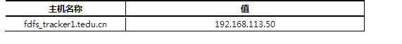
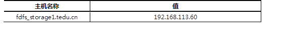

FastDFS是一个分布式文件系统，主要的服务器角色有Tracker和Storage。本例安装一台Tracker，实现以下功能：
准备一台虚拟机，安装FastDFS Tracker。
主机的主机名及对应的IP地址如表-1所示。
表－1 主机名称及对应IP地址表
实现此案例需要按照如下步骤进行。
1）配置yum源，并安装所需的软件包。
[root@fdfs_tracker1 ~]# yum install -y gcc libevent make [root@fdfs_tracker1 ~]# rpm -ihv \ libevent-devel-1.4.13-4.el6.x86_64.rpm \ libevent-doc-1.4.13-4.el6.noarch.rpm \ libevent-headers-1.4.13-4.el6.noarch.rpm
2）解压缩FastDFS安装包，查看安装说明文档进行安装。
[root@fdfs_tracker1 fdfs]# tar xzf FastDFS_v4.06.tar.gz [root@fdfs_tracker1 fdfs]# cd FastDFS [root@fdfs_tracker1 FastDFS]# vim INSTALL [root@fdfs_tracker1 fdfs]# ./make.sh [root@fdfs_tracker1 fdfs]# ./make.sh install [root@fdfs_tracker1 FastDFS]# vim INSTALL [root@fdfs_tracker1 FastDFS]# cp init.d/fdfs_trackerd /etc/init.d/
3）创建存储目录（存储日志等）。
[root@fdfs_tracker1 FastDFS]# mkdir -pv /data/fastdfs
4）修改配置文件。
[root@fdfs_tracker1 FastDFS]# vim /etc/fdfs/tracker.conf base_path=/data/fastdfs/ ＃ 设置基础目录 max_connections=4096 ＃ 设置最大连接数 store_group=group1 ＃ 设置存储组名 use_storage_id = true ＃ 使用stroage_id代替ip地址
5）创建storage_id文件。
[root@fdfs_tracker1 FastDFS]# cp conf/storage_ids.conf /etc/fdfs/
6）编辑storage id文件，加入存储组声明。
[root@fdfs_tracker1 FastDFS]# vim /etc/fdfs/storage_ids.conf 100001 group1 192.168.113.60
7）修改客户端配置文件。
[root@fdfs_tracker1 FastDFS]# vim /etc/fdfs/client.conf base_path=/data/fastdfs tracker_server=192.168.113.50:22122
8）控制tracker启动。
[root@fdfs_tracker1 FastDFS]# /etc/init.d/fdfs_trackerd
用法：/etc/init.d/fdfs_trackerd {start|stop|status|restart|condrestart}
9）查看tracker运行状态。
[root@fdfs_tracker1 FastDFS]# /etc/init.d/fdfs_trackerd status fdfs_trackerd (pid 28928) 正在运行... [root@fdfs_tracker1 FastDFS]# netstat -tlnp | grep tracker tcp 0 0 0.0.0.0:22122 0.0.0.0:* LISTEN 28928/fdfs_trackerd
安装FastDFS Storage存储节点，存储节点被划分到相应的组里。同一个组中的服务器保存完全相同的内容， 不同分组存不同的内容。存储节点具有以下功能：
准备一台虚拟机，安装FastDFS Tracker。
主机的主机名及对应的IP地址如表-2所示。
表－2 主机名称及对应IP地址表
实现此案例需要按照如下步骤进行。
步骤一：配置yum源，并安装所需的软件包
[root@fdfs_storage1 ~]# yum install -y gcc libevent make [root@fdfs_storage1 ~]# rpm -ihv \ libevent-devel-1.4.13-4.el6.x86_64.rpm \ libevent-doc-1.4.13-4.el6.noarch.rpm \ libevent-headers-1.4.13-4.el6.noarch.rpm
步骤二：解压缩、查看安装指南进行安装
[root@fdfs_storage1 fdfs]# tar xzf FastDFS_v4.06.tar.gz [root@fdfs_storage1 fdfs]# cd FastDFS [root@fdfs_storage1 FastDFS]# vim INSTALL [root@fdfs_storage1 fdfs]# ./make.sh [root@fdfs_storage1 fdfs]# ./make.sh install [root@fdfs_storage1 FastDFS]# vim INSTALL [root@fdfs_storage1 FastDFS]# cp init.d/fdfs_storaged /etc/init.d/
步骤三：创建数据存储目录（存储日志、数据文件等）
[root@fdfs_storage1 FastDFS]# mkdir -pv /data/fastdfs
步骤四：修改配置文件
[root@fdfs_storage1 FastDFS]# vim /etc/fdfs/storage.conf base_path=/data/fastdfs/ ＃ 设置基础工作目录 max_connections=4096 ＃ 设置最大连接数 store_path0=/data/fastdfs/ ＃ 设置上传文件目录 tracker_server=192.168.113.50:22122 ＃ 设置连接的Tracker upload_priority=10 ＃ 设置组内服务器优先级
步骤五：控制storage启动
[root@fdfs_storage1 FastDFS]# /etc/init.d/fdfs_storaged
用法：/etc/init.d/fdfs_storaged {start|stop|status|restart|condrestart}
步骤六：查看storage工作状态
[root@fdfs_storage1 FastDFS]# /etc/init.d/fdfs_storaged status fdfs_storaged (pid 28916) 正在运行... [root@fdfs_storage1 FastDFS]# netstat -tlnp | grep storage tcp 0 0 0.0.0.0:23000 0.0.0.0:* LISTEN 28916/fdfs_storaged
为实现文件的上传、下载和删除等功能，FastDFS提供相应的命令行工具。测试这些工具的使用。为了方便用户访问，可以在storage上配置web访问功能，使得文件通够通过web页面进行访问。
步骤一：使用fdfs_test测试工具
1）上传文件
测试程序会对一个文件上传两次。返回的文件id也是两个并上传文件附加属性。storage上生成4个文件
[root@fdfs_tracker ~]# /usr/local/bin/fdfs_test /etc/fdfs/client.conf upload install.log
查看上传到storage的文件
[root@fdfs_storage1 FastDFS]# ls /data/fastdfs/data/00/00/ wKhxPFc3oD6ARewxAAC6OPZ7hp8271_big.log wKhxPFc3oD6ARewxAAC6OPZ7hp8271.log wKhxPFc3oD6ARewxAAC6OPZ7hp8271_big.log-m wKhxPFc3oD6ARewxAAC6OPZ7hp8271.log-m
2）删除文件
[root@fdfs_tracker1 fastdfs]# /usr/local/bin/fdfs_test /etc/fdfs/client.conf\ delete group1 M00/00/00/wKhxPFc3oD6ARewxAAC6OPZ7hp8271_big.log
步骤二：使用其他相关命令
1）通过fdfs_upload_file上传文件
[root@fdfs_tracker1 fastdfs]# /usr/local/bin/fdfs_upload_file＼ /etc/fdfs/client.conf /etc/passwd group1/M00/00/00/wKhxPFc3pEyAFrHBAAAGKI1fx1k5058918
2）通过fdfs_download_file下载文件
[root@fdfs_tracker1 ~]# /usr/local/bin/fdfs_download_file /etc/fdfs/client.conf＼ group1/M00/00/00/wKhxPFc3pEyAFrHBAAAGKI1fx1k5058918
3）通过fdfs_delete_file删除文件
[root@fdfs_tracker1 ~]# /usr/local/bin/fdfs_delete_file /etc/fdfs/client.conf\ group1/M00/00/00/wKhxPFc3pEyAFrHBAAAGKI1fx1k5058918
步骤三：配置web访问
1）在storage上安装nginx
[root@fdfs_storage1 ~]# yum install -y pcre pcre-devel zlib zlib-devel [root@fdfs_storage1 fdfs]# tar xzf fastdfs-nginx-module_v1.16.tar.gz [root@fdfs_storage1 fdfs]# tar xzf nginx-1.7.10.tar.gz [root@fdfs_storage1 fdfs]# cd nginx-1.7.10 [root@fdfs_storage1 nginx-1.7.10]# useradd -s /sbin/nologin nginx [root@fdfs_storage1 nginx-1.7.10]# ./configure --prefix=/usr/local/nginx ＼ --user=nginx --group=nginx --add-module=../fastdfs-nginx-module/src/ [root@fdfs_storage1 nginx-1.7.10]# make && make install
2）为nginx修改fastdfs模块配置
[root@fdfs_storage1 fdfs]# cp fastdfs-nginx-module/src/mod_fastdfs.conf \ /etc/fdfs [root@fdfs_storage1 fdfs]# vim /etc/fdfs/mod_fastdfs.conf tracker_server=192.168.113.50:22122 group_name=group1 url_have_group_name = true store_path0=/data/fastdfs/
3）修改ngin配置文件并启动
[root@fdfs_storage1 fdfs]# vim /usr/local/nginx/conf/nginx.conf
# location / {
# root html;
# index index.html index.htm;
# } 将这段说明注释掉，增加以下说明
location / {
ngx_fastdfs_module;
}
[root@fdfs_storage1 fdfs]# /usr/local/nginx/sbin/nginx
4）测试web访问
[root@fdfs_tracker1 ~]# /usr/local/bin/fdfs_upload_file ＼ /etc/fdfs/client.conf tedu.jpg group1/M00/00/00/wKhxPFc4f2yAVLH7AACwEV-ILDc194.jpg [root@fdfs_tracker1 ~]# firefox＼ http://192.168.113.60/group1/M00/00/00/wKhxPFc4f2yAVLH7AACwEV-ILDc194.jpg &
结果如图1所示
图-1